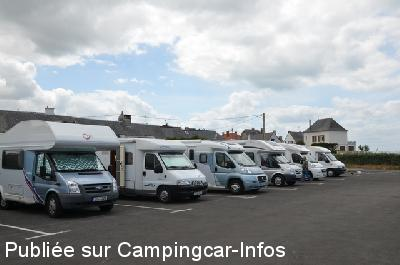
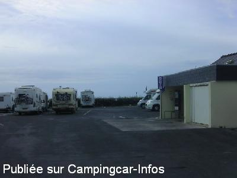
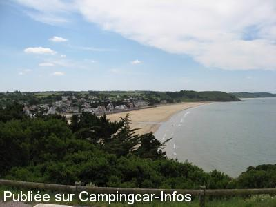
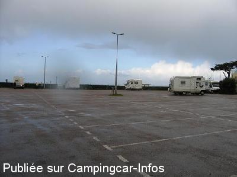
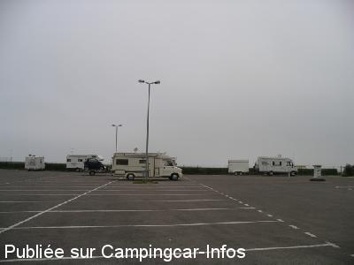

ASN = Aire de services avec stationnement nuit possible de :
ERQUY
(N° 465)
Accès/adresse :
Avenue de Caroual
22430 ERQUY
22430 ERQUY
Latitude : (Nord) 48.62152° Décimaux ou 48° 37′ 17′′
Longitude : (Ouest) -2.47236° Décimaux ou -2° 28′ 20′′
Tarif : 2016
Stationnement : 6 €
100 L d'eau ou 55 mn d'électricité : 2 €
Paiement par horodateur
Type de borne : Autre
Services :


Commerces
La boulangère passe le matin
Autres informations :
Ouverte toute l'année
44 emplacements goudronnés, éclairés, sans ombre
Tel Office du Tourisme : +33(0)296 723 012

Le 06/10/2013 par

Le 02/09/2012 par les normands

Le 19/01/2012 par Breizh 22 Gérard

Le 04/01/2010 par Milo

Le 27/09/2006 par
de
hidena86
le 18/04/2016 :
De passage le 06 avril 2016
Aire vraiment bien placée. Mais il faut arriver tôt pour avoir une place !!!! c'est la rançon du succès.
De passage le 06 avril 2016
Aire vraiment bien placée. Mais il faut arriver tôt pour avoir une place !!!! c'est la rançon du succès.
de
Anais
le 18/02/2016 :
De passage l"été 2015, aire très calme et vue sur la mer. Paysage magnifique
De passage l"été 2015, aire très calme et vue sur la mer. Paysage magnifique
de
Ossard Thierry
le 21/04/2015 :
bonjour,
Nous avons passés 2 nuits aire agréable calme et près de la mer.
bonjour,
Nous avons passés 2 nuits aire agréable calme et près de la mer.
de
Denis LC
le 28/12/2014 :
présent le 26 dec 2014
simple mais correct
espace entre campings cars agréable
vue mer
"même par gros vent l'aire est agréable, avons été bercé toute la nuit"
petite crêperie juste à proximité,
présent le 26 dec 2014
simple mais correct
espace entre campings cars agréable
vue mer
"même par gros vent l'aire est agréable, avons été bercé toute la nuit"
petite crêperie juste à proximité,
de
Jean-Pierre
le 29/09/2014 :
De passage le samedi 20 septembre, cette aire a le mérite d'exister. Il faut noter que les abords ne sont pas entretenus et que le système de paiement par pièces devient obsolète.
De passage le samedi 20 septembre, cette aire a le mérite d'exister. Il faut noter que les abords ne sont pas entretenus et que le système de paiement par pièces devient obsolète.
de
B59
le 14/08/2014 :
Bonjour
Aire sur goudron, certes à côté de la mer mais nous sommes tassés les uns sur les autres et en plein soleil. Nous n'avons trouvé aucun côté agréable à cette aire.
Nous ne féliciterons pas la municipalité qui a certainement trouvé un moyen de rentabiliser un bout de terrain ...
Bonjour
Aire sur goudron, certes à côté de la mer mais nous sommes tassés les uns sur les autres et en plein soleil. Nous n'avons trouvé aucun côté agréable à cette aire.
Nous ne féliciterons pas la municipalité qui a certainement trouvé un moyen de rentabiliser un bout de terrain ...
de
Wally 72
le 02/12/2013 :
Nuit du 12-11-2013. Aire agréable, calme, plage à proximité, 20 mm du centre ville à pied. Belles ballades le long de la côte. Malgré un horodateur capricieux, la police municipale passe vérifier le ticket ou mettre un avertissement de non paiement.
Nuit du 12-11-2013. Aire agréable, calme, plage à proximité, 20 mm du centre ville à pied. Belles ballades le long de la côte. Malgré un horodateur capricieux, la police municipale passe vérifier le ticket ou mettre un avertissement de non paiement.
de
coullp
le 15/10/2013 :
Stayed one night (28/9/13). Very pleasant and still quite busy.
The water refill was not working however.
Very close to the sea, just a short walk through a car park.
Stayed one night (28/9/13). Very pleasant and still quite busy.
The water refill was not working however.
Very close to the sea, just a short walk through a car park.
de
a&b
le 21/07/2013 :
nuit 05/31/2013
environ 22 CC, asphalte, WC, services fonctionnent. comment à l'électricité?
calme, proche de la plage
Merci équipes Camping Car et Caravane Adria
nuit 05/31/2013
environ 22 CC, asphalte, WC, services fonctionnent. comment à l'électricité?
calme, proche de la plage
Merci équipes Camping Car et Caravane Adria
de
marc de belgique
le 27/10/2012 :
aire tres bien située tout pres de la plage avons séjournés 2 nuits début octobre tres belles ballades l une vers val andre l autre vers le cap erquy (superbe)pour les 2 suivre le gr et avoir une bonne paire de godasses lol marc et nadia
aire tres bien située tout pres de la plage avons séjournés 2 nuits début octobre tres belles ballades l une vers val andre l autre vers le cap erquy (superbe)pour les 2 suivre le gr et avoir une bonne paire de godasses lol marc et nadia
de
Moiteaux
le 12/09/2012 :
bonjour,
Cet aire serait très bien,si il avait des prises de courant sur le pourtour de l'air.
Sinon superbe
bonjour,
Cet aire serait très bien,si il avait des prises de courant sur le pourtour de l'air.
Sinon superbe
de
les normands
le 02/09/2012 :
aire très bien a 50m de la plage,très calme,et a 1 km du centre ville 6€ part 24 heures. le boulanger passe a 8h .
parfait rien a dire.
aire très bien a 50m de la plage,très calme,et a 1 km du centre ville 6€ part 24 heures. le boulanger passe a 8h .
parfait rien a dire.
de
Gilles Mazoyer
le 06/06/2012 :
Un arrêt pour manger .....
De la place entre les CC, proximité immédiate de la plage....
Par contre je n y passerai pas une éternité.
Un arrêt pour manger .....
De la place entre les CC, proximité immédiate de la plage....
Par contre je n y passerai pas une éternité.
de
le 03/09/2011 :
De passage sur l'aire en aout les emplacements ont été agrandis pour la plupart 8 metres de long un bon 5m de large, pour réaliser cela environ 20 places ont été suprimées, encore environ 60 emplacements sur cette aire qui est vraiment bien
De passage sur l'aire en aout les emplacements ont été agrandis pour la plupart 8 metres de long un bon 5m de large, pour réaliser cela environ 20 places ont été suprimées, encore environ 60 emplacements sur cette aire qui est vraiment bien